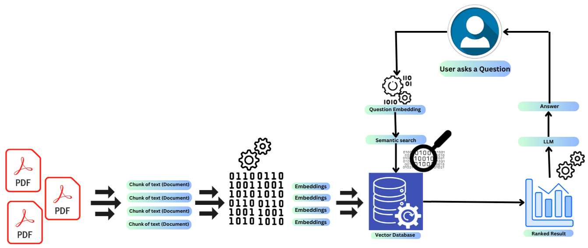

Introduction
MultiPDF chatbot is a Streamlit web application that acts as a chatbot capable of processing and answering questions based on multiple uploaded PDF documents. The application utilizes various libraries and APIs, including PyPDF2 for reading PDF files, Google Generative AI for embeddings and conversational responses, SpeechRecognition for speech input, FPDF for generating PDFs, and Streamlit for the web interface. It allows users to upload PDFs, process them to extract text, and then interact with the chatbot either through text input or speech recognition. The chatbot employs a conversational chain model to provide answers based on the context provided in the uploaded PDF documents. Additionally, the application provides options for auditory feedback and downloading the chat history as a PDF file. Overall, it offers an interactive and versatile platform for querying information contained within multiple PDF documents.
Key Features
-
PDF Upload and Processing:
Users can upload multiple PDF documents directly to the application. The uploaded PDF files are then processed to extract textual content, enabling the chatbot to analyze and respond to user queries based on the information contained within these documents.
-
Text and Speech Interaction:
The application supports both text and speech input methods, allowing users to interact with the chatbot through written queries or spoken commands. Speech input utilizes the SpeechRecognition library to transcribe spoken words into text format for processing.
-
Conversational AI:
Powered by Google Generative AI, the chatbot employs state-of-the-art conversational models to understand user queries and provide accurate responses. It can handle a wide range of questions, leveraging contextual information from the uploaded PDF documents to generate relevant answers.
-
Auditory Feedback:
Users have the option to receive auditory feedback for chatbot responses. This feature utilizes the pyttsx3 library to convert text-based responses into spoken audio, enhancing the user experience for individuals with visual impairments or those who prefer auditory communication.
-
Downloadable Chat History:
The application allows users to download the entire chat history as a PDF file. This feature enables users to save and review the conversation for future reference, providing a convenient way to retain important information discussed during the interaction.
Getting Started
-
Upload PDF Documents:
Click on the file uploader section in the sidebar and select one or more PDF documents to upload.
-
Submit and Process:
After uploading the PDF documents, click the "Submit & Process" button to initiate the processing of uploaded PDF files. The application will extract text from the PDF documents and prepare the chatbot for interaction.
-
Interact with the Chatbot:
Use the chat interface to ask questions or provide queries to the chatbot. You can type your questions directly into the text input box or use the "Speak Query" button to provide queries through speech input.
-
Review and Download Chat History:
Once the conversation is complete, you can review the chat history displayed in the main content area. To download the chat history as a PDF file, simply click the "Download PDF Chat" button.
Block Diagram
Libraries Used
-
PyPDF2:
This library provides functionality to work with PDF files in Python. It is used to read the content of uploaded PDF documents, extract text from them, and prepare it for further processing within the application.
-
langchain:
LangChain is a library that offers text processing capabilities, including text splitting and vectorization. It facilitates the division of text into manageable chunks and generates embeddings for these chunks, which are essential for similarity comparison and question answering.
-
Google Generative AI:
The application utilizes Google Generative AI APIs for embeddings and conversational AI capabilities. These APIs provide state-of-the-art natural language understanding and generation models, which power the chatbot's ability to comprehend user queries and generate human-like responses.
-
Streamlit:
Streamlit is a Python library used for building interactive web applications. It simplifies the process of creating web interfaces by allowing developers to write Python scripts that generate interactive UI components. The MultiPDF Chatbot utilizes Streamlit to create the user interface for uploading PDF files, interacting with the chatbot, and displaying chat history.
-
SpeechRecognition:
This library enables speech recognition functionality within the application. It captures audio input from the user's microphone and transcribes it into text format, allowing users to interact with the chatbot through spoken commands.
-
pyttsx3:
Pyttsx3 is a text-to-speech conversion library that converts text-based responses generated by the chatbot into audible speech. It provides auditory feedback to users, enhancing the accessibility and user experience of the application.
-
FPDF:
FPDF is a Python library used to generate PDF documents programmatically. It is employed in the MultiPDF Chatbot application to format and create a PDF document containing the chat history, which users can download for reference.
-
dotenv:
Dotenv is a Python library used for loading environment variables from a .env file. It enables the application to securely access sensitive information such as API keys, without hardcoding them directly into the codebase.
Technical Overview
-
PDF Processing
PyPDF2: The PdfReader class from PyPDF2 library is used to read the content of uploaded PDF files. It iterates through each page of the PDF documents and extracts text using the extract_text() method.
-
Text Chunking
RecursiveCharacterTextSplitter: This custom text splitter class divides the extracted text into manageable chunks. It splits the text into segments of a specified size (chunk_size) with an optional overlap (chunk_overlap) to ensure continuity between chunks.
-
Embeddings and Vectorization
- GoogleGenerativeAIEmbeddings: The GoogleGenerativeAIEmbeddings class is used to generate embeddings for text chunks using the Google Generative AI API. These embeddings represent the semantic meaning of the text and are essential for similarity comparison and question answering.
- FAISS Vector Store: The FAISS library is employed to create a vector store from the text chunks' embeddings. This vector store enables efficient similarity search operations, allowing the chatbot to find relevant documents based on user queries.
-
Conversational AI
- ChatGoogleGenerativeAI: The ChatGoogleGenerativeAI class initializes a conversational model powered by the Gemini API from Google Generative AI. This model, based on GPT architecture, is fine-tuned for conversational tasks and is capable of generating human-like responses given a context and a prompt.
- Question Answering Chain: The load_qa_chain function loads a question-answering (QA) chain, which orchestrates the interaction between the conversational model and the vectorized text chunks. It defines a prompt template that guides the model to generate answers based on the provided context and user questions.
-
User Interaction
- Streamlit Interface: The application's user interface is created using Streamlit, a Python library for building web applications. It provides widgets for uploading PDF files, displaying chat messages, and capturing user input through text input boxes and buttons.
- Speech Recognition: Speech input is facilitated using the speech_recognition library, which captures audio from the user's microphone and transcribes it into text using Google's speech recognition service.
-
Auditory Feedback and PDF Generation
- Text-to-Speech (TTS): The pyttsx3 library converts text-based responses into audible speech, providing auditory feedback to the user upon request.
- PDF Generation: The FPDF library is employed to generate a PDF document containing the chat history. It iterates through the chat messages and formats them into a PDF file, which users can download for reference.
-
Integration and Configuration
- Google API Key: The application requires a Google API key, which is stored in a .env file and retrieved using the dotenv library. This key is used to authenticate requests to the Google Generative AI API for embeddings and conversational responses.
- Streamlit Configuration: The Streamlit page is configured with custom settings such as page title, icon, and sidebar buttons for documentation and clearing chat history.
-
Deployment and Collaboration
- GitHub Repository: The application code is typically hosted on a GitHub repository, allowing collaboration among developers and version control management.
- Documentation and Support: Detailed documentation, like this one, provides guidance on using the application and understanding its functionality. Users can refer to the documentation for assistance and troubleshooting.
Use Cases
-
Research Assistance:
Researchers and students can use the chatbot to quickly extract information from multiple research papers or academic documents. They can upload PDFs related to their topic of interest and ask specific questions to gather relevant insights and references.
-
Legal Document Analysis:
Legal professionals can leverage the chatbot to analyze legal documents, such as contracts, agreements, or court rulings. They can upload PDFs of these documents and inquire about specific clauses, legal terms, or case precedents to obtain accurate interpretations and explanations.
-
Educational Support:
Teachers and educators can utilize the chatbot as a teaching aid in the classroom or online learning environment. They can upload PDFs of textbooks, articles, or study materials and encourage students to ask questions related to the content. The chatbot can provide additional explanations, clarifications, or further reading suggestions to enhance understanding.
-
Customer Support:
Businesses can integrate the chatbot into their customer support systems to assist customers with inquiries related to product manuals, user guides, or troubleshooting documents. Customers can upload PDFs of product documentation and ask questions about features, usage instructions, or technical issues, receiving prompt and accurate assistance from the chatbot.
-
Knowledge Management:
Organizations can use the chatbot to build a knowledge base by uploading and indexing internal documents, reports, or policies. Employees can then access this knowledge base through the chatbot to retrieve information, seek guidance on company procedures, or resolve common queries, improving overall productivity and efficiency.
-
Legal Compliance Checks:
Compliance officers and legal advisors can employ the chatbot to conduct compliance checks on regulatory documents, such as laws, regulations, or industry standards. They can upload PDFs of relevant documents and inquire about specific compliance requirements or legal obligations, ensuring adherence to applicable laws and regulations.
-
Medical Information Retrieval:
Healthcare professionals can utilize the chatbot to access medical literature, research papers, or clinical guidelines. They can upload PDFs of medical journals or articles and ask questions regarding diagnostic criteria, treatment protocols, or drug interactions, obtaining evidence-based information to support clinical decision-making.
-
Training and Onboarding:
Human resources departments can deploy the chatbot to facilitate employee training and onboarding processes. New hires can upload PDFs of training manuals, policy documents, or procedural guides and ask questions to familiarize themselves with company policies, processes, and best practices.
-
For the Visually impaired:
Visually impaired students can use the chatbot as a supplementary learning tool to enhance their understanding of academic materials. They can upload PDFs of textbooks, lecture notes, or study guides and ask the chatbot to explain concepts, clarify doubts, or provide additional examples, promoting inclusive education and academic success.
Limitations
-
Scalability and Performance:
The code may face scalability and performance issues when processing large volumes of PDF documents or handling concurrent user requests. Processing efficiency, memory usage, and response times may degrade under heavy load, impacting the overall user experience.
-
Maintenance and Updates:
The codebase may require regular maintenance and updates to address issues, incorporate new features, or adapt to changes in external APIs and libraries. Without proper maintenance practices, the code may become outdated or vulnerable to security risks over time.
-
Dependency Management:
Managing dependencies and ensuring compatibility between different libraries and APIs used in the code can be challenging. Version conflicts, deprecated features, or changes in library behavior may introduce bugs or compatibility issues that require careful attention and testing.
-
Language Support:
The effectiveness of the chatbot is inherently tied to its language capabilities. The chatbot is trained on English as a primary language; it may struggle to understand queries or extract information accurately from PDF documents written in other languages. This limitation restricts its utility for users who work with documents in languages other than the one supported by the chatbot.